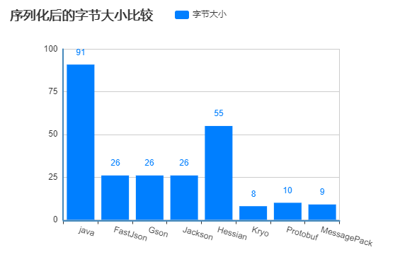
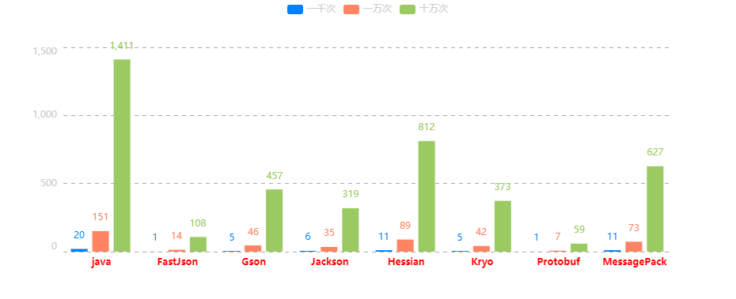

序列化是（Serialization）是将对象的状态信息转换为可以存储或传输的形式的过程。 在序列化期间，对象将其当前状态写入到临时或持久性存储区。 以后，可以通过从存储区中读取或反序列化对象的状态，重新创建该对象。在分布式系统中，序列化是很重要的，直接关系数据的传输大小和效率，这里比较几种常见的序列化工具（框架）之间的性能差异。
JAVA原生序列化

JDK自带的序列化，对象必须实现Serializable接口，通过ObjectOutputStream输出二进制数据，反序列化通过ObjectInputStream生成目标对象
1 | public class JavaSerializable extends AbstractSerializableByte { |
JSON工具
JSON是一种轻量级的数据交换语言，该语言以易于让人阅读的文字为基础，用来传输由属性值或者序列性的值组成的数据对象，类似xml，Json比xml更小、更快更容易解析，JSON序列化框架有很多，主流的有下面三种：Gson、fastJson和Jackson
fastJson

fastJson是阿里巴巴的开源JSON解析库（github传送门），在企业中应用广泛，首先要导入依赖
1 | <dependency> |
1 | public class FastJsonSerializable extends AbstractSerializableString { |
Gson
Gson是Google公司发布的一个开源的Java库（github传送门），也是一个高效的JAVA对象序列化、反序列化框架。
引入依赖
1 | <dependency> |
实现上和fastJson没有太大差异
1 | public class GsonSerializable extends AbstractSerializableString { |
Jackson
Jackson（github传送门）也是java语言实现的开源工具，它是Spring中Json的默认实现，虽然多年未维护了，但依旧使用广泛。
引入依赖
1 | <dependency> |
1 | public class JacksonSerializable extends AbstractSerializableByte { |
Hessian
Hessian（官网传送门）是一个基于二进制的协议，Hessian支持很多种语言，例如Java、python、c++,、net/c#、D、Erlang、PHP、Ruby、object-c等，它的序列化和反序列化也是非常高效，与Java原生序列化一样，被序列化/反序列化的对象也必须实现Serializable接口，实现代码的写法也很像Java原生序列化。
引入依赖
1 | <dependency> |
1 | public class HessianSerializable extends AbstractSerializableByte { |
Kryo

Kryo是一个快速高效的Java序列化框架（github传送门），旨在提供快速、高效和易用的API。无论文件、数据库或网络数据Kryo都可以随时完成序列化。Kryo还可以执行自动深拷贝（克隆）、浅拷贝（克隆）。这是对象到对象的直接拷贝，而不是对象->字节->对象的拷贝。
引入依赖
1 | <dependency> |
1 | public class KryoSerializable extends AbstractSerializableByte { |
MessagePack

It’s like JSON.but fast and small. —— messagePack官网（传送门）的定义，一句话足以说明它的特点
引入依赖
1 | <dependency> |
messagepack要求序列化的对象上需要加@Message注解
1 |
|
实现
1 | public class MessagePackSerializable extends AbstractSerializableByte { |
Protobuf
protobuf（Protocol Buffers，官网传送门）是由Google公司发布的数据交换格式，提供跨语言、跨平台的序列化和反序列化实现，底层由C++实现，其他平台使用时必须使用protocol compiler进行预编译生成protoc二进制文件，原生的protobuf演示略显麻烦，这里只是为了做性能测试，因此使用百度公司对protobuf二次封装的API:jprotobuf（github传送门）
jprotobuf是针对Java程序开发一套简易类库，目的是简化java语言对protobuf类库的使用，无需再去了解proto文件操作与语法，直接使用java注解定义字段类型即可。protobuf性能主要消耗在文件的预编译上，因此jprotobuf提供的maven预编译插件，在工程编译/打包时生成protobuf二进制文件。
引入依赖
1 | <!--jprotobuf-precompile-plugin 支持maven编译时同时进行jprotobuf对象的预编译操作.--> |
引入插件
1 | <plugin> |
实现
1 | public class ProtobufSerializable extends AbstractSerializableByte { |
性能测试
1 | 测试平台：Windows10 |
首先，各执行一次，比较每种序列化后的字节长度，结果如下图

从结果看，java原生的序列化生成的字节大小非常大，hessian其次，三种json序列化大小一样，然后是protobuf、messagepack和kryo，接下来比较性能，测试方法如下：
1 | public class Test { |
测试过程省略，直接看测试结果

从测试结果得出以下结论：
- Java原生的序列化/反序列化性能最差，生成的字节数也最大，无法跨语言；
- 三种Json序列化实现里，fastJson最好，jackson其次，gson最差，生成的字节数一样。
- Hessian略好于java原生实现（dubbo对hessian做了优化，性能比原生的hessian更好），跨语言支持；
- protobuf >> kryo > Messagepack，这三种序列化后生成的字节数相当，但是protobuf与另两种相比，性能有几倍甚至十几倍的提升，十万次的测试耗时仅相当于其他两种一万次的耗时
- fastjson的性能最接近protobuf，阿里号称其自从发布以来，性能从未被其他Java实现的JSON库超越，果然牛逼！
最后，测试的完整代码参见：源码
如有不对的地方，欢迎拍砖！